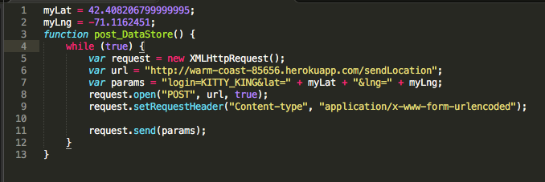
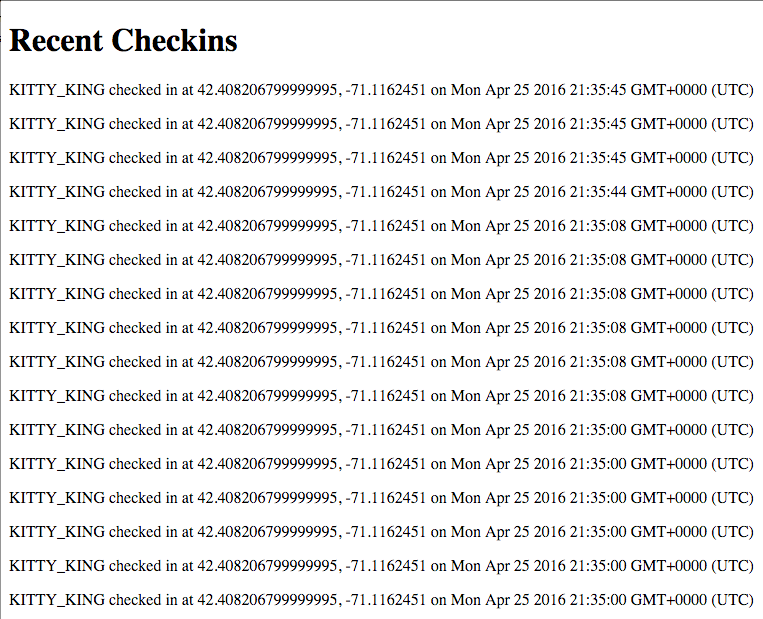
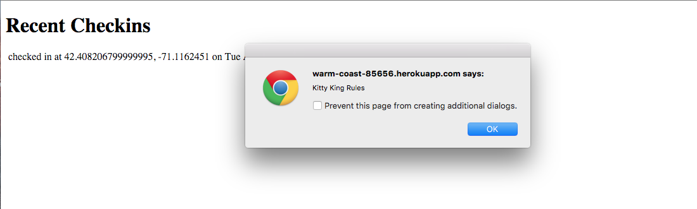
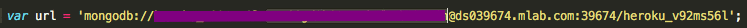

Introduction
This is an analysis of the security issues privacy vulnerabilities of a web application by Spencer Perry which displays historic landmarks around someone who was logged onto the application.
Methodology
I tried to expose security and privacy issues in three different ways. The first way I used was to try to overflow the checkin server. This involved writing a javascript program that made an infinite amount of post requests to the /sendLocation to see how the application would handle it. Then, as my login parameter for the post, I entered both javascript surrounded by script tags and recognizable html to see how the https://warm-coast-85656.herokuapp.com/ page would respond. I also reviewed Spencer's code to see if any particular security or privacy concerns that presented itself in the code.
Abstract of Findings
The first issue right off the bat, was there was evidence that the app would have allowed the infiinte post requests to have been made. This means that it is possible for a single user to be able to overflow the database where all of the checkins through the sendLocation API are being kept making the web application insecure. The second issue is that the web app doesn't regulate the type of checkin input that it gets. The app allows for input that it could interpret as code. This kind of input can actually change what the app does or what it displays and potentially mangle the app for all users to see. Thirdly, Spencer included the url to his database in his code showing the login and password to it. This is concerning, because anyone who can see the code can also mess with the database.
Issues
First Issue
This is issue is a database vulnerability found using the /sendLocation API. Without actually doing so, I was able to show that it is entirely possible for a user of the API to run post requests within an infinite loop as seen below.

The application responded like such before I quickly disabled the server running my above code:

This shows the same checkin post within several milliseconds of each other. This causes the browser to freeze for a considerable amount of time. There is a good chance that if I kept this running that it would have overloaded the server. This is an issue of moderate servity. Although this isn't evidence that a user could breach other user's privacy and access their login information, a user can easily overload the server and prevent it from working correctly. A way to defend against this, would be to have the server prevent multiple of a request with the same login information to be done within milliseconds of each other. This would involve defensive code on the server side checking for such a case.
Second Issue
The second security issue I noticed is that the /sendLocation API allows for cross site scripting. Both an injection of javascript and html were allowed. This is a rather severe security issue as this poses many problems including presenting all users with fraudulent content, allowing for malicious code injection, stealing cookie information, and generally disrupting the home page. Below are two examples of disruptions that I was able to produce. The first was done putting javascript as the login parameter for the post request, and the second was done putting html as the login parameter.

In order to prevent XSS, one must remove the ability for request data to be interpretted as code. This can be code by getting rid of angle brackets, which is key for recognizing html tags. Change < to "& l t" and Change > to "& g t" (without spaces or quotation marks).
Third Issue
The third issue can be seen in this bit on code that spencer included.

He hard coded the URI to his heroku mongoDB rather than initialize it in the way shown in the example here. This leaves his username and password to his database exposed to whoever has access to the code (which I haved colored out). This is an issue of high severity. Whoever has this information is able to access and mangle all of the information in the database, which is a huge breach of privacy. For example I was able to connect to the database and delete the checkins collection as seen below.